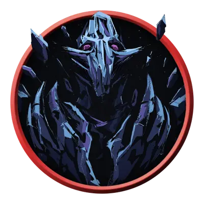

Живой конус холода
Living Cone of Cold
Большой Конструкт, без мировоззрения

Класс Защиты 15 Инициатива +2 (12)
Хиты 105 (10к10 + 50)
Скорость 25 футов, Полёта 25 футов
| мод | спас | ||
|---|---|---|---|
| СИЛ | 10 | +0 | +0 |
| ЛОВ | 15 | +2 | +2 |
| ТЕЛ | 20 | +5 | +5 |
| мод | спас | ||
|---|---|---|---|
| ИНТ | 3 | −4 | −4 |
| МДР | 11 | +0 | +0 |
| ХАР | 6 | −2 | −2 |
Иммунитеты Холод; Испуганный, Истощение, Оглохший, Опрокинутый, Опутанный, Ослеплённый, Отравленный, Очарованный, Схваченный
Чувства пассивное Восприятие 10, Слепое зрение 60 футов
Языки нет
Опасность 7 (2 900 опыта; БВ +3)
Особенности
Аморфность. Живое заклинание может проходить через пространство шириной всего 1 дюйм, не тратя на это дополнительное перемещение.
Сопротивление магии. Живое заклинание совершает с Преимуществом спасброски от заклинаний и прочих магических эффектов.
Действия
Мультиатака. Живое заклинание совершает две атаки Магическим ударом.
Магический удар. Бросок рукопашной атаки: +8, досягаемость 10 фт. Попадание: 27 (5к8 + 5) урона Холодом.
Подражание заклинанию (Перезарядка 5–6). Спасбросок Телосложения: Сл 16, все существа в 60-футовом Конусе. Провал: 36 (8к8) урона Холодом. Успех: Только половина урона.
Бонус мастерства +3
Живые заклинания
Ожившие магические эффекты
Магическая энергия, высвобожденная во время катастроф, сражений и гибельных экспериментов, может заставить эффекты заклинаний ожить в виде живых заклинаний. Магическая энергия этих существ не рассеивается, а сами они обладают чертами, напоминающими породившие их заклинания — обычно от заклинаний школ Воплощения и Призыва. Живые заклинания, как правило, остаются в области своего появления, питаясь фоновой магической энергией и нападая на встреченных существ.
Сопровождаемый порывами ледяного ветра, живой конус холода ищет источники тепла — например, живых существ, — чтобы заморозить их насквозь.
Создание живых заклинаний
Живые заклинания существуют во множестве разновидностей; приведённые здесь блоки статистики представляют лишь три примера. Чтобы создать живое заклинание на основе другого, выберите наносящее урон заклинание школы Воплощения или Призыва 5-го уровня или ниже из списка заклинаний Волшебника. Затем сверьтесь с таблицей «Настройка живого заклинания», чтобы определить, какой блок статистики следует изменить в зависимости от уровня выбранного заклинания.
Настройка живого заклинания
| Уровень заклинания | Изменяемый блок характеристик |
| 1–2 | Живая волна грома |
| 3–4 | Живой едкий шар |
| 5 | Живой конус холода |
Теперь внесите в блок характеристик следующие изменения:
• Иммунитет к урону. Замените Иммунитет Живого заклинания иммунитетом к типу или типам урона, наносимого выбранным заклинанием.
• Магический удар. Замените тип урона, наносимого Магическим ударом, на один из типов урона, наносимого выбранным заклинанием.
• Подражание заклинанию. Замените эффект Имитации заклинания эффектом выбранного заклинания. Если это заклинание требует спасброска, используйте Сл спасброска заклинаний, указанную в Подражании заклинанию. Если заклинание предусматривает бросок атаки, используйте бонус атаки Магического удара Живого заклинания.
Например, если вы превращаете Огненный шар — заклинание 3-го уровня — в живое заклинание, измените блок статистики Живого едкого шара. Живой огненный шар обладает Иммунитетом к урону Огнём вместо урона Кислотой, наносит урон Огнём своим Магическим ударом и воспроизводит эффект Огненного шара с помощью Подражания заклинанию.